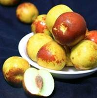

数据编码是计算机处理中非常关键的一部分。它通过使用编码符号来表示信息或数据，从而便于使用和记忆。数据编码就像给事物特征编密码，用简单数字精准记录外形特点，最常用的就是0和1。我们可以用0和1为水果的外形特征制定二进制编码规则，轻松读懂数字背后的水果模样。我们为水果制定了5个容易观察的特征，每个特征只有两种可能，用0或1表示。
表1 水果的特征属性编码表
|
水果特征 |
特征描述 |
编码（0） |
编码（1） |
|
①表皮颜色 |
看水果表面的主要颜色 |
暖色系（红/黄/橙） |
冷色系（绿/紫/蓝） |
|
②表面质感 |
摸一摸水果表面 |
光滑 |
粗糙 |
|
③大小 |
看水果有多大 |
小型（单手可握/拿） |
大型（双手捧） |
|
④形状 |
看水果是什么形状 |
圆形/椭圆形 |
非圆形（如草莓形） |
|
⑤有无明显籽/核 |
切开或咬开看看 |
无/不明显 |
有明显籽/核 |
编码按【表皮颜色→表面质感→大小→形状→有无明显籽/核】的固定位序组合，每串5位二进制编码对应唯一的水果特征。
上图所示的菠萝就可以用编码01110表示，这是一个暖色表皮、大型、粗糙、非圆形、无籽的水果。
【题目】根据以上学习资料，下图所示冬枣的编码应该为 。
